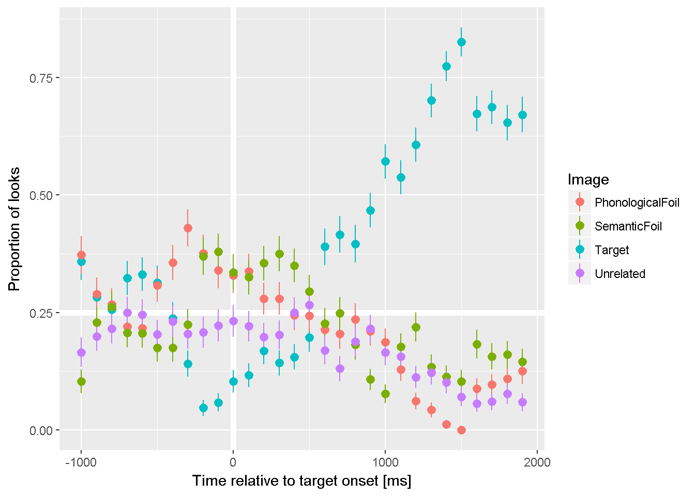

Aggregating Eyetracking Data
TJ Mahr
2017-09-13
Consider data from a Visual World style experiment. On each trial, an array of images appears. For example:

The listener hears a prompt to view one of images: Find the bell.
Among these images is a target (here, bell), a phonological competitor (bee), a semantic competitor (drum), and an unrelated word (swing).
We have some eyetracking data from this experiment for one participant:
library(littlelisteners)
library(dplyr, warn.conflicts = FALSE)
#> Warning: package 'dplyr' was built under R version 3.4.1
four_image_data
#> # A tibble: 20,910 x 25
#> Subject BlockNo Time GazeByAOI GazeByImageAOI TargetLocation
#> <chr> <int> <int> <chr> <chr> <chr>
#> 1 001P 1 35238 tracked tracked UpperRightImage
#> 2 001P 1 35255 tracked tracked UpperRightImage
#> 3 001P 1 35272 tracked tracked UpperRightImage
#> 4 001P 1 35288 tracked tracked UpperRightImage
#> 5 001P 1 35306 tracked tracked UpperRightImage
#> 6 001P 1 35322 tracked tracked UpperRightImage
#> 7 001P 1 35338 tracked tracked UpperRightImage
#> 8 001P 1 35355 tracked tracked UpperRightImage
#> 9 001P 1 35372 tracked tracked UpperRightImage
#> 10 001P 1 35388 tracked tracked UpperRightImage
#> # ... with 20,900 more rows, and 19 more variables:
#> # PhonologicalLocation <chr>, SemanticLocation <chr>,
#> # UnrelatedLocation <chr>, Audio <chr>, CarrierOnset <int>,
#> # TrialNo <int>, UpperLeftImage <chr>, UpperRightImage <chr>,
#> # LowerRightImage <chr>, LowerLeftImage <chr>, Target <chr>,
#> # SemanticFoil <chr>, PhonologicalFoil <chr>, Unrelated <chr>,
#> # UpperLeftImageStimulus <chr>, UpperRightImageStimulus <chr>,
#> # LowerRightImageStimulus <chr>, LowerLeftImageStimulus <chr>,
#> # TargetOnset <int>The gazes are coded in the GazeByImageAOI column as looks to the "Target", "PhonologicalFoil", "SemanticFoil", or "Unrelated" images, or as "tracked" (ambiguous/intermediate location) or NA (offscreen or missing).
Response definitions
To deal with eyetracking data in a generic way, we need a way to describe eyetracking responses. We assume that there are four basic gaze types.
- Primary responses: A gaze to a primary or target image.
- Other responses: Gazes to competing images.
- Elsewhere looks: A gaze that is onscreen but not a primary or other response. Typically, this occurs when the participant is shifting between images.
- Missing looks: A missing or offscreen gaze.
A response definition is a programmatic way of describing these response types. In the code below, response_def is a response definition for the four-image experiment with a "Target" image and the three competing images lumped together in the "Others" "Distractor" and other looks are either "tracked" or missing (NA).
response_def <- create_response_def(
primary = "Target",
others = c("PhonologicalFoil", "SemanticFoil", "Unrelated"),
elsewhere = "tracked",
missing = NA,
label = "looks to target"
)
response_def
#> List of 5
#> $ response_def: chr "looks to target"
#> $ primary : chr "Target"
#> $ others : chr [1:3] "PhonologicalFoil" "SemanticFoil" "Unrelated"
#> $ elsewhere : chr "tracked"
#> $ missing : logi NA
#> - attr(*, "class")= chr "response_def"Aggregating looks
These response definitions allow us to aggregate looking data in a generic way. The function aggregate_looks() counts the number of looks to each of the four response categories using an aggregation formula. For example, we can count looks by participant. There are several columns here, so we view glimpse() to look at some values from all of them.
four_image_data %>%
aggregate_looks(response_def, Subject ~ GazeByImageAOI) %>%
glimpse()
#> Observations: 1
#> Variables: 14
#> $ .response_def <chr> "looks to target"
#> $ Subject <chr> "001P"
#> $ PhonologicalFoil <dbl> 2461
#> $ SemanticFoil <dbl> 2478
#> $ Target <dbl> 4094
#> $ Unrelated <dbl> 2033
#> $ Elsewhere <dbl> 1202
#> $ Missing <dbl> 8642
#> $ Others <dbl> 6972
#> $ Primary <dbl> 4094
#> $ Looks <dbl> 20910
#> $ Prop <dbl> 0.369962
#> $ PropSE <dbl> 0.004589513
#> $ PropNA <dbl> 0.4132951Or looks by participant by trial. Here we just print the dataframe as is.
four_image_data %>%
aggregate_looks(response_def, Subject + TrialNo ~ GazeByImageAOI)
#> # A tibble: 24 x 15
#> .response_def Subject TrialNo PhonologicalFoil SemanticFoil Target
#> <chr> <chr> <int> <dbl> <dbl> <dbl>
#> 1 looks to target 001P 1 232 80 250
#> 2 looks to target 001P 2 181 93 242
#> 3 looks to target 001P 3 79 101 231
#> 4 looks to target 001P 4 188 135 123
#> 5 looks to target 001P 5 90 170 164
#> 6 looks to target 001P 6 70 198 172
#> 7 looks to target 001P 7 83 47 109
#> 8 looks to target 001P 8 60 63 77
#> 9 looks to target 001P 9 71 50 50
#> 10 looks to target 001P 10 57 305 150
#> # ... with 14 more rows, and 9 more variables: Unrelated <dbl>,
#> # Elsewhere <dbl>, Missing <dbl>, Others <dbl>, Primary <dbl>,
#> # Looks <dbl>, Prop <dbl>, PropSE <dbl>, PropNA <dbl>We can also perform other kind of aggregations using different response definitions. For instance, we can compare image locations by writing a new response definition.
location_def <- create_response_def(
primary = "LowerLeftImage",
others = c("UpperRightImage", "UpperLeftImage", "LowerRightImage"),
elsewhere = "tracked",
missing = NA
)
aggregate_looks(four_image_data, location_def, Subject ~ GazeByAOI) %>%
glimpse()
#> Observations: 1
#> Variables: 14
#> $ .response_def <chr> "LowerLeftImage"
#> $ Subject <chr> "001P"
#> $ LowerLeftImage <dbl> 2761
#> $ LowerRightImage <dbl> 3099
#> $ UpperLeftImage <dbl> 2569
#> $ UpperRightImage <dbl> 2637
#> $ Elsewhere <dbl> 1202
#> $ Missing <dbl> 8642
#> $ Others <dbl> 8305
#> $ Primary <dbl> 2761
#> $ Looks <dbl> 20910
#> $ Prop <dbl> 0.249503
#> $ PropSE <dbl> 0.004113552
#> $ PropNA <dbl> 0.4132951We can perform multiple aggreations at once. First, cycle_response_def() can create a cycle of response definitions where each response acts as the primary outcome at least once.
all_defs <- cycle_response_def(response_def)
all_defs
#> [[1]]
#> List of 5
#> $ response_def: chr "Target"
#> $ primary : chr "Target"
#> $ others : chr [1:3] "PhonologicalFoil" "SemanticFoil" "Unrelated"
#> $ elsewhere : chr "tracked"
#> $ missing : logi NA
#> - attr(*, "class")= chr "response_def"
#>
#> [[2]]
#> List of 5
#> $ response_def: chr "PhonologicalFoil"
#> $ primary : chr "PhonologicalFoil"
#> $ others : chr [1:3] "Target" "SemanticFoil" "Unrelated"
#> $ elsewhere : chr "tracked"
#> $ missing : logi NA
#> - attr(*, "class")= chr "response_def"
#>
#> [[3]]
#> List of 5
#> $ response_def: chr "SemanticFoil"
#> $ primary : chr "SemanticFoil"
#> $ others : chr [1:3] "Target" "PhonologicalFoil" "Unrelated"
#> $ elsewhere : chr "tracked"
#> $ missing : logi NA
#> - attr(*, "class")= chr "response_def"
#>
#> [[4]]
#> List of 5
#> $ response_def: chr "Unrelated"
#> $ primary : chr "Unrelated"
#> $ others : chr [1:3] "Target" "PhonologicalFoil" "SemanticFoil"
#> $ elsewhere : chr "tracked"
#> $ missing : logi NA
#> - attr(*, "class")= chr "response_def"When given a list of response definitions, aggregate_looks() will compute the aggregation for each one.
four_image_data %>%
aggregate_looks(all_defs, Subject ~ GazeByImageAOI) %>%
select(ResponseDef = .response_def, Subject, Primary,
Others, Prop, PropSE, PropNA) %>%
knitr::kable()| ResponseDef | Subject | Primary | Others | Prop | PropSE | PropNA |
|---|---|---|---|---|---|---|
| Target | 001P | 4094 | 6972 | 0.3699620 | 0.0045895 | 0.4132951 |
| PhonologicalFoil | 001P | 2461 | 8605 | 0.2223929 | 0.0039532 | 0.4132951 |
| SemanticFoil | 001P | 2478 | 8588 | 0.2239292 | 0.0039629 | 0.4132951 |
| Unrelated | 001P | 2033 | 9033 | 0.1837159 | 0.0036813 | 0.4132951 |
Growth curve analysis is aggregating looks over time
With aggregate_looks(), we can estimate the growth curves of looking probabilities. First, for this data-set, we need to adjust the eyetracking timestamps so that time 0 occurs at target onset. We are also going to bin and downsample the eyetracking data to have an effective sampling rate of 10 frames per second.
growth_curves <- four_image_data %>%
adjust_times(Time, TargetOnset, Subject, BlockNo, TrialNo) %>%
filter(-1005 <= Time, Time <= 2000) %>%
assign_bins(6, Time, Subject, BlockNo, TrialNo) %>%
# Set a time for each bin
group_by(Subject, BlockNo, TrialNo, .bin) %>%
mutate(BinTime = round(min(Time))) %>%
aggregate_looks(all_defs, Subject + BinTime ~ GazeByImageAOI) %>%
rename(Time = BinTime)We now have four growth curves, one for each image type, in a single dataframe.
growth_curves
#> # A tibble: 120 x 15
#> .response_def Subject Time PhonologicalFoil SemanticFoil Target
#> <chr> <chr> <dbl> <dbl> <dbl> <dbl>
#> 1 Target 001P -1000 54 15 52
#> 2 Target 001P -900 48 38 47
#> 3 Target 001P -800 46 45 44
#> 4 Target 001P -700 36 34 53
#> 5 Target 001P -600 38 36 58
#> 6 Target 001P -500 53 30 54
#> 7 Target 001P -400 57 28 38
#> 8 Target 001P -300 67 35 22
#> 9 Target 001P -200 56 55 7
#> 10 Target 001P -100 52 58 9
#> # ... with 110 more rows, and 9 more variables: Unrelated <dbl>,
#> # Elsewhere <dbl>, Missing <dbl>, Others <dbl>, Primary <dbl>,
#> # Looks <dbl>, Prop <dbl>, PropSE <dbl>, PropNA <dbl>We can plot these growth curves.
library(ggplot2)
#> Warning: package 'ggplot2' was built under R version 3.4.1
ggplot(growth_curves) +
aes(x = Time, y = Prop, color = .response_def) +
geom_hline(size = 2, color = "white", yintercept = .25) +
geom_vline(size = 2, color = "white", xintercept = 0) +
geom_pointrange(aes(ymin = Prop - PropSE, ymax = Prop + PropSE)) +
labs(y = "Proportion of looks",
x = "Time relative to target onset [ms]",
color = "Image")